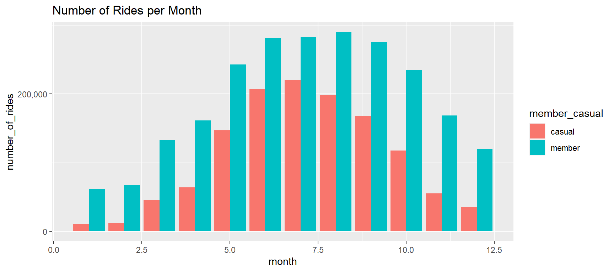
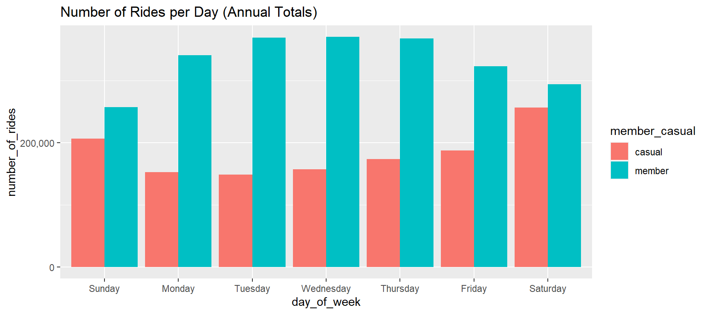
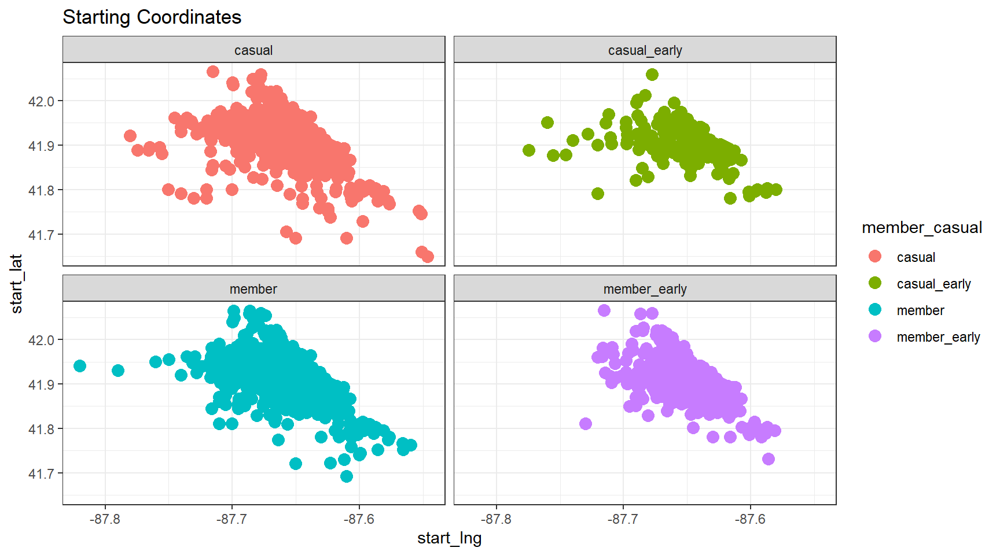
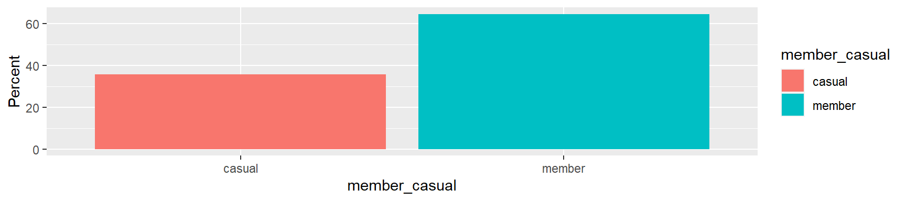
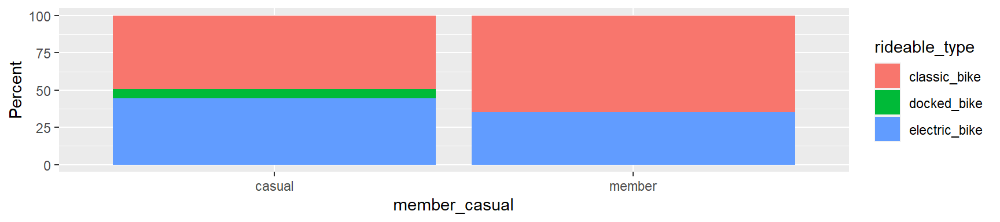
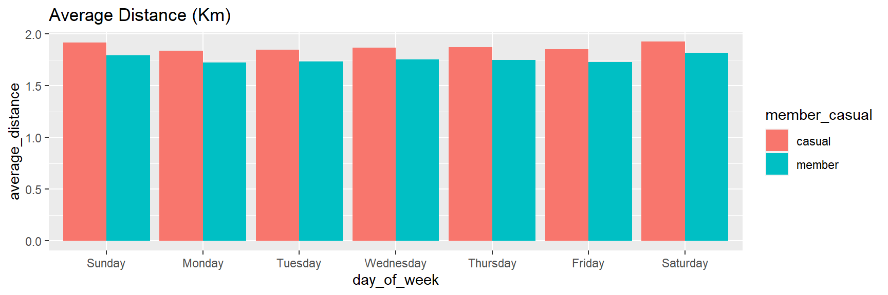
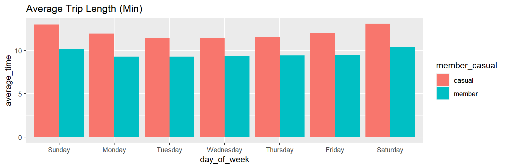
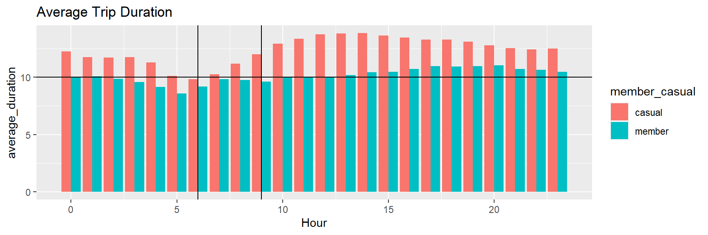
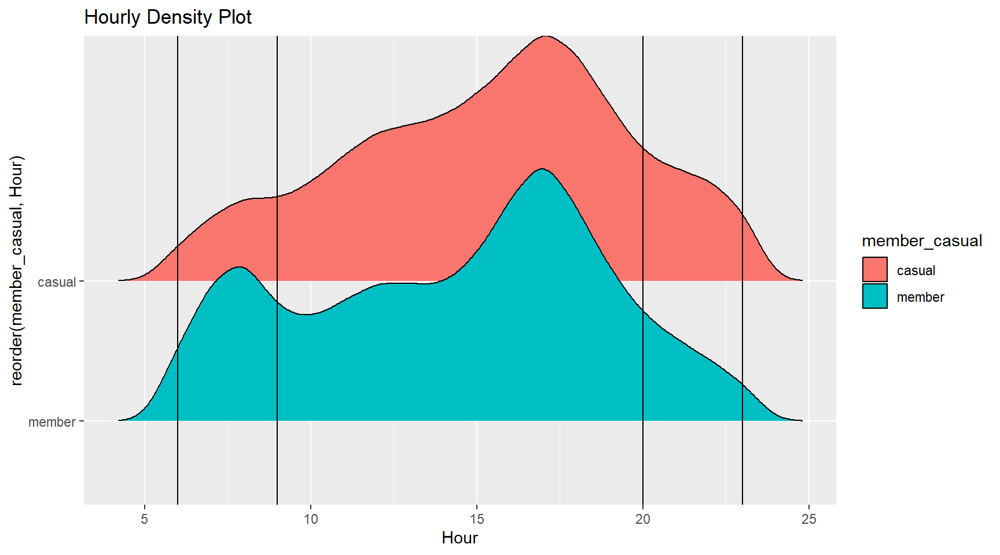

Abstract
This analysis aims to understand user’s behavior and develop strategies to increase the number of subscribers in the city of Chicago. Until now, Cyclistic’s marketing strategy relied on building general awareness and appealing to broad consumer segments. This is an alternative approach which recommends narrowing the scope of the marketing campaign by targeting early riders and evening riders. Based on the historical trip records between “2021-11-01” and “2022-10-30”, the data describes two types of casual-user behavior that could instruct the marketing team to develop conversion strategies. Examining the ridership of causal users during the early hours (6-9 AM) and late hours (8 PM-12 AM), reveals that causal-users follow patterns of work-commute times and late evening entertainment, respectively. Using this knowledge, it is encouraged to promote marketing campaigns focused on these time intervals.
Key assumptions:
This analysis assumes that Early riders (6-9 AM) and Late riders (8 PM-12 AM), are motivated by constant factors such as work and evening entertainment, rather than random recreational use or tourism.
Marketing campaign’s success will be measure by quantifying the change in subscriptions during these two time intervals.
Collecting and Processing Data
The trip history data has been made available to the public by Motivate International Inc. This is public data to explore how different customer types are using bikes. Once the data collection was completed, the process of identifying, correcting, and removing inaccurate data was performed with R. The interquartile range method was used to remove outliers. For example, elements with negative values, duplicates, and extreme ride duration.
General Data Insights
The data collected show seasonal trends. Ridership increases during spring time and begins to decline at the end of summer. The lowest ridership numbers coincide with the months of cold weather in Chicago. Therefore, the marketing campaign should leverage the months with high traffic.

A weekly time frame show high weekend traffic for both, member and casual riders, but lower ridership for non-members during the weekday.

A larger percentage of riders cluster around the coastal section of the city. (Map of 1K random observations)
The next plots illustrate the common starts and end locations of early riders vs late riders (after 10:00AM). Accurate knowledge of high density starting/ending locations could inform the marketing team how to effectively use ‘out of home’ ads, also known as street advertising.

In this period of observation, subscribers accounted for the majority of the trips, approximately 60%.

In addition, we also notice a difference in the type of bikes customers prefer.

However, regardless of bike type, the average trip distance for members and casual users is approximately equal. One the other hand, non-member’s average time per ride is lengthier.


This is true except during morning hours.

Brief Analysis
The following density plot shows the hourly distribution for both members and causal users. In it, two distinct peaks for the subscriber class emerge, which coincide with the to-and-fro of work commuting. After business day hours, we see an increase in the density of causal user and a decline in member trips. This is particularly interesting for several reasons:(1)just like the member class, the number of causal users experience an increases between 6:00-9:00AM, which suggest that there is a demand for commuting to work (2) given the demand, we posit that this segment of causal user are more persuadable by marketing; and 3)unlike the member class, the number of casual users increases after 8:00PM, equally expressing a strong demand for bike services during the night entertainment hours. Tables 1 and 2 summarize the totals per class category during the morning and evening periods.
Findings
This dataset exhibits seasonal trends with the highest traffic between March and October.
Approximately 22% of rides between 6:00-9:00AM were made by casual users. This ratio increases to 45% after 8:00PM.
Casual users show a higher preference for eBikes.
Both early_casual and early_subscriber have similar starting and ending location.

Table 1. Describes the percentages per class and ride preference during the work commuting hours (6-9AM).
.id | label | variable | rideable_type | ||
|---|---|---|---|---|---|
classic_bike | docked_bike | electric_bike | |||
member_casual | member_casual | casual | 52689 (18%/46%) | 4813 (100%/4%) | 57103 (29%/50%) |
member | 244552 (82%/64%) | 0 (0%/0%) | 140469 (71%/36%) | ||
Table 2. Describes the percentages per class and ride preference during the night-entertainment hours-8:00PM-12:00AM.
.id | label | variable | rideable_type | ||
|---|---|---|---|---|---|
classic_bike | docked_bike | electric_bike | |||
member_casual | member_casual | casual | 72223 (41%/51%) | 8584 (100%/6%) | 62135 (50%/43%) |
member | 105815 (59%/63%) | 0 (0%/0%) | 62717 (50%/37%) | ||
Recommendation
This analysis recommends narrowing the scope of the marketing campaign by targeting early riders and evening riders. First, the data shows evidence of strong demand for these services, accounting for roughly 22% of annual ridership during the morning hours and 45% after 8:00 PM. Second,leverage the user’s preferences and geo-location to design marketing campaigns.
The strategy:
- Employing specific advertisements during a set period and location.
- Transform geo-location information to effective use ‘out of home’ ads.
- Send digital ads at specific time intervals.
- Propose digital ads that promote lower-price incentives to convert
customers.
- Add subscription tier that targets high traffic month at a reduce price. For example, March-to-October for 80 USDs
- Leverage casual-user’s ride-type preferences. For example, make emphasis of e-Bikes.
Data Limitations
This is public data to explore how different customer types are using bikes. However, it does not have important information such gender, availability of rides per station, rider_id; or other features that would help to enrich the analysis. For example, how to determine if casual riders live in the service area.